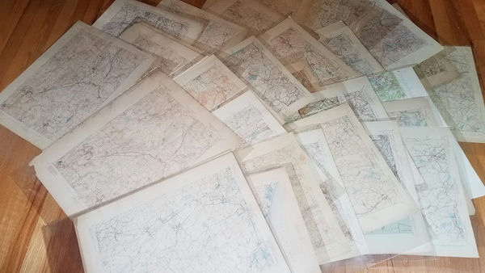
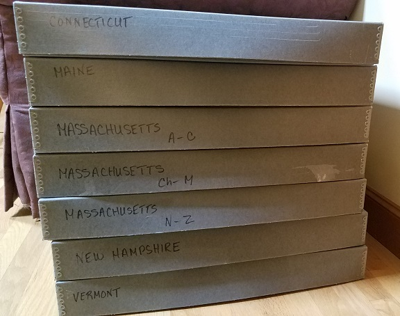

NEARA is grateful to the many donors of books and videos that we have acquired over the years. See our listings at: NEARA.Library. Those donations have resulted in a wide variety of interesting titles, reflecting the eclectic interests of NEARA members.
The donations have also resulted in many duplicate titles and in the acquisition of books that are sometimes not completely aligned with NEARA's principal interests. With our move to a more affordable but smaller location, we find we do not have room for everything that we have. Hence we are offering for sale hundreds of duplicate books and books that are not central to our interests, some sets of glossy magazines, and hundreds of USGS topographic maps.
Currently available are (1) books and videos, (2) magazine collections, and (3) topographic maps.
View our complete collection of books for sale online at:
Books for Sale.
NOTE: this collection changes frequently, so look often for the newest listings and the latest information.
Here is our list of available fiction: Fiction.
The NEARA Library and Archives is basically a research library, so works of fiction have to go, no matter how delightful or engaging. On the other hand, we may keep some works if the authors are associated with NEARA.
In our collection the most well represented authors are Kathleen O'Neal Gear and W Michael Gear. They are the authors of several series: The First North Americans, The Anasazi Mysteries, The People of the Longhouse, and the People of Cahokia.
Another popular author is Jean M. Auel. She is known for her series Earth's Children, including The Clan of the Cave Bear.
We have many titles on geology: Geology.
As with other categories, there are many interesting books that are available. Included are many reports on specific locations in the northeast, or on specific topics such as:
Although the library in Nashua NH is closer to NEARA members than when it was in Concord NH, for many people it's still too far for a casual visit. So we have decided to deaccession our collections of glossy magazines. We are still keeping the newsletters and bulletins of various archaeological societies in our archives.
The following magazines are available for your permanent pleasure:
Read about the magazine at: Archaeology Magazine. Our collection is nearly complete from the summer of 1959 on. Some back issues are available from the publisher at $10 each. For example: Archaeological Institute of America
Get our whole collection for just $150 (plus shipping), or best offer. Contact the NEARA Librarian.
Read about the magazine at: Biblical Archaeology Review. It isn't clear whether printed back issues are available.
Get our whole collection for just $100 (plus shipping), or best offer. Contact the NEARA Librarian.
See the photo above, at the bottom. Read about the discontinued magazine at: Archaeology Odyssey.
(sold)
Read about the magazine at: American Archaeology Magazine. Back issues are available from the publisher at $3.95 each: Archaeological Conservancy
(sold)
See the photo above, on the right side. Read about the magazine at: Current World Archaeology Magazine. Back issues are available from the publisher at £5.95 each: Current Publishing.
(sold)
The cartographic world converted to digital years ago. You can view USGS topographic maps online at: USGS TopoView. It shows both historical maps, such as the ones NEARA has, as well as current maps.
It is also possible to buy maps online, both newly printed ones from the USGS as well as old maps from private sellers. Here is one example from eBay: eBay USGS topo map 1894 Hawley quadrangle MA-VT
Despite everyone using digital maps these days, there's still something special about large paper maps. Many of our USGS maps date from the 1890's.
Each of our older maps is protected in an individual clear plastic sleeve. All have been stored flat in large boxes.
At the time of this writing there are 463 maps available. The distribution is CT: 54, ME: 11, MA: 242, NH: 90, VT: 66. For some popular areas we have multiple copies available. We are keeping all maps that have interesting markings on them -- those have already been withdrawn and stored at the archives.
Rather than trying to sell these maps individually, we are hoping to find someone willing to sell them online. Alternatively, it would be nice to find someone willing to buy the whole collection. Contact the NEARA Librarian if you have a proposal or some suggestions.